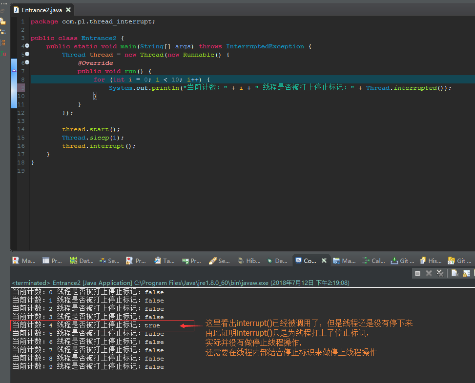
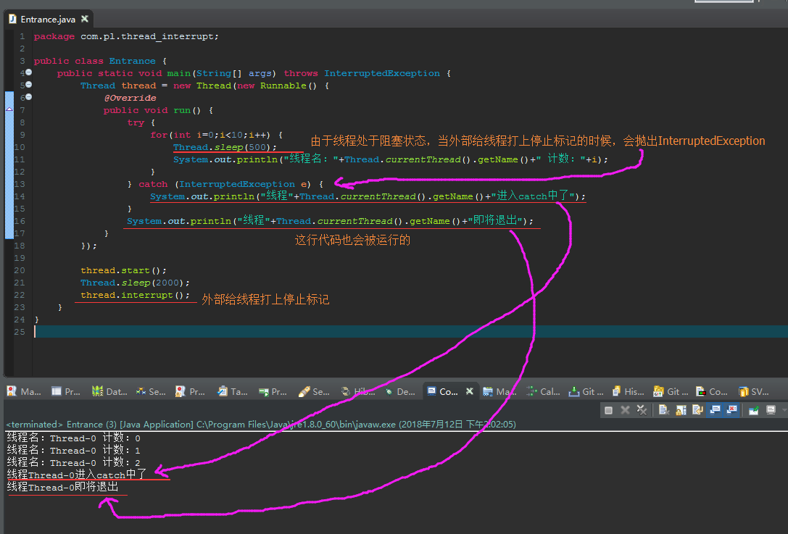

一、停止线程的挑战
停止线程是在多线程开发时很重要的技术点，掌握此技术可以对线程的停止进行有效的处理。停止线程在Java语言中并不像break语句那样干脆，需要一些技巧性的处理。
使用Java内置支持多线程的类设计多线程应用是很常见的事情，然而，多线程给开发人员带来一些新的挑战，如果处理不好就会导致超出预期的行为并且难以定位错误。
二、stop()方法停止线程：不建议使用了，JDK将它标为过期方法了
示例：
哈哈，既然是一个已过期方法，干嘛还要有例子呢
三、interrupt()方法停止线程：正确的停止线程方法
掌握知识点1：调用interrupt()方法仅仅在线程中打了一个停止的标记（在阻塞的情况下还会抛出异常），并不是真的停止线程。（见附录知识点1）
掌握知识点2：interrupted()方法用于探测当前线程是否被打上了停止的标记，并且清除该标记
掌握知识点3：isInterrupted()方法用于探测当前线程是否被打上了停止的标记，并且不会清除该标记
掌握知识点4：interrupt()方法配合if判断线程停止标记来使用
掌握知识点5（常用）：interrupt()方法配合catch异常来使用（见附录知识点5）
掌握知识点6：interrupt()方法配合return来使用
掌握知识点7：当线程处于阻塞状态时，调用interrupt()方法会在线程中打上停止的标记并且抛出InterruptedException异常
附录：
知识点1：调用interrupt()方法仅仅在线程中打了一个停止的标记（在阻塞的情况下还会抛出异常），并不是真的停止线程。

知识点5：interrupt()方法配合catch异常来使用
